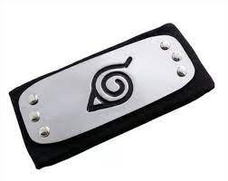
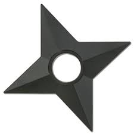
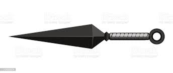
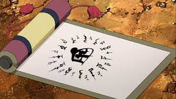

destinado a amarrar cordas, originário da era Tensho no Japão.

que explodem com determinado tempo com o selo do usúario.
que o permite armazenar técnicas seladas nos pergaminhos.
| Foto | Descrição | Preço (R$) | Quantidade disponível |
|---|---|---|---|
|  | Bandana ninja: servem para mostrar a lealdade de quem está as utilizando. | Preço: R$ 10,00 | Quantidade disponível: 100 unidades. |
|  | Shuriken: é uma arma de arremesso de origem japonesa e está entre as 18 disciplinas do Ninjutsu, no Shuriken Jutsu. | Preço: R$ 5,00 | Quantidade disponível: 500 unidades. |
|  | Kunai: é uma arma ninja que consiste em uma lâmina de ferro com um grande furo na base, destinado a amarrar cordas, originário da era Tensho no Japão. |
Preço: R$ 10,00 | Quantidade disponível: 200 unidades. |
|
Papel bomba: consiste em um pedaço de papel com selos especiais, que explodem com determinado tempo com o selo do usúario. |
Preço: R$ 5,00 | Quantidade disponível: 250 unidades. |
|  | Pergaminho: um equipamento ninja de alta tecnologia atrelado ao antebraço do indivíduo, que o permite armazenar técnicas seladas nos pergaminhos. |
Preço: R$ 25,00 | Quantidade disponível: 50 unidades. |